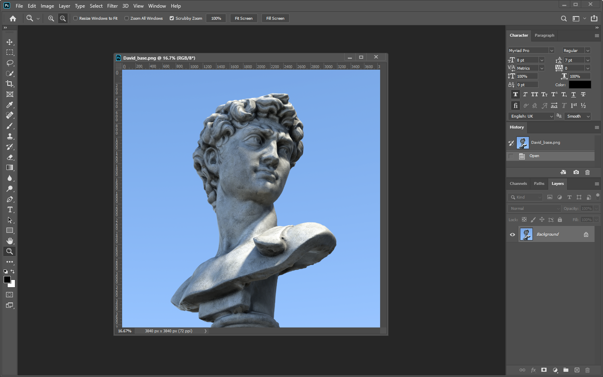
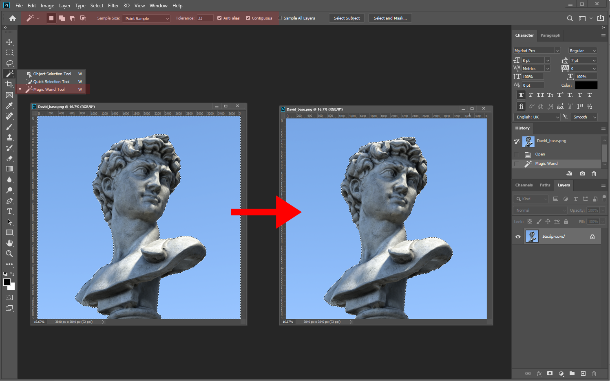
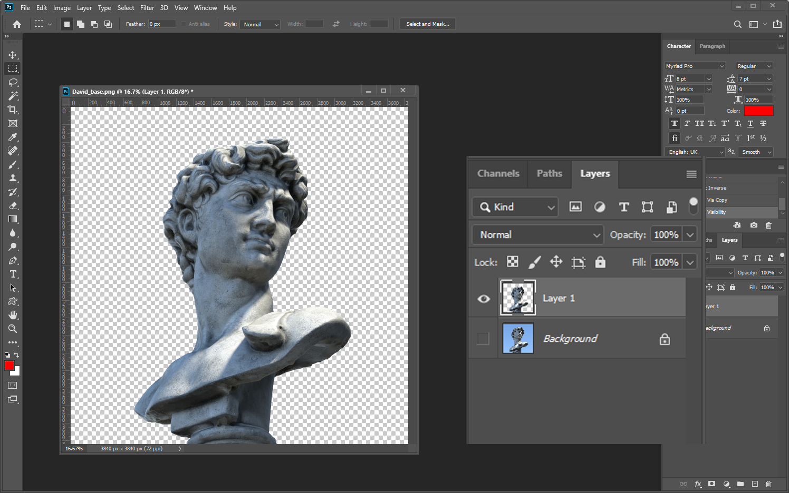
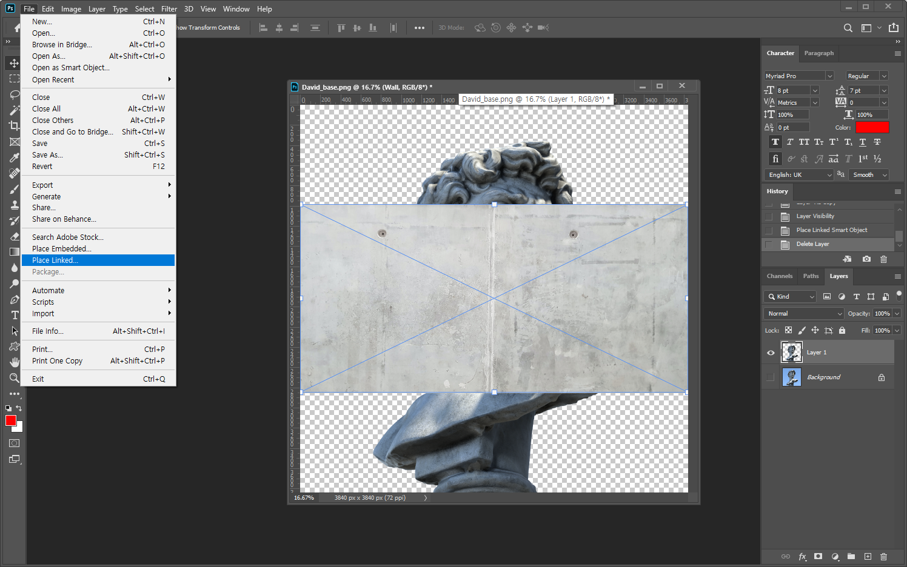
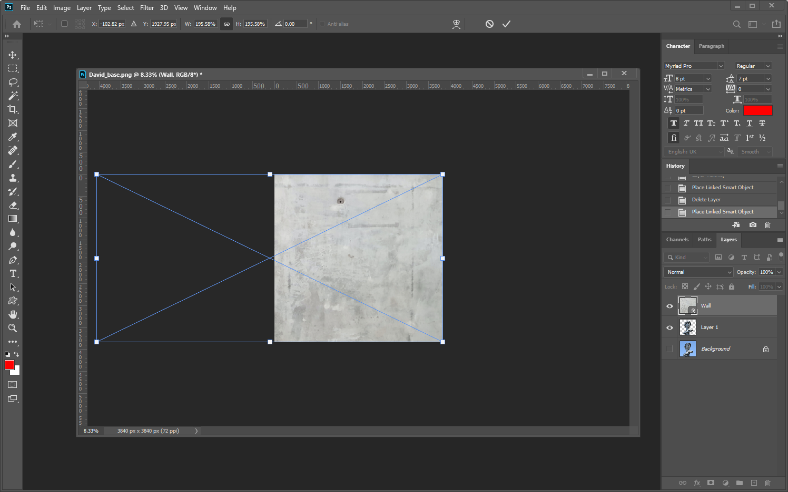
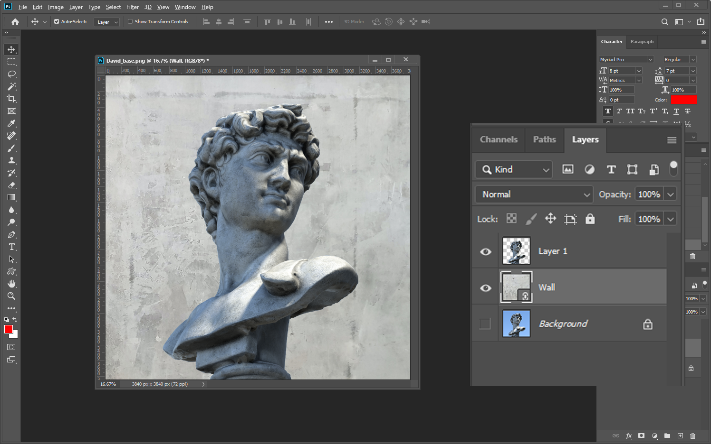
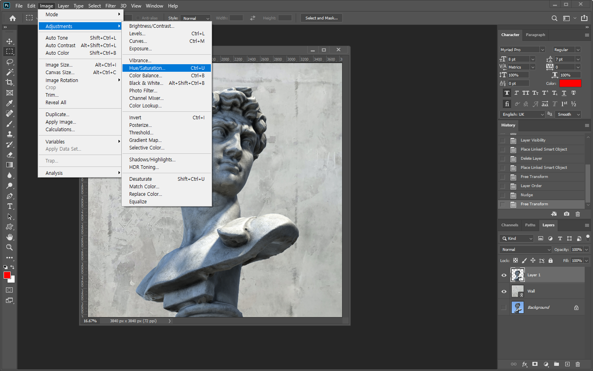
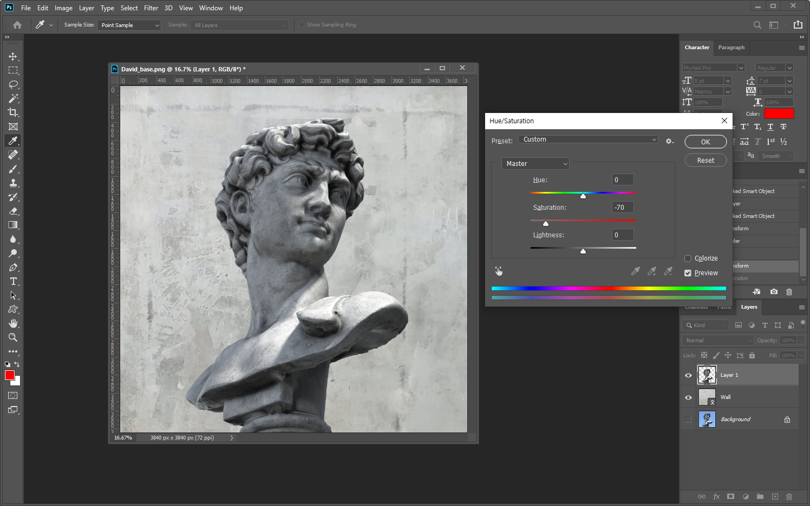

photoshop
다비드상 누끼따기
David_base.png, Wall.jpg
마술봉툴, Hue/Saturation
마술봉툴, Hue/Saturation
완성

작업 순서
Step 1
David_base.png 을 불러온다
Step 2
마술봉툴로 하늘 부분을 클릭한 후 + + 을 눌러 선택 영역 반전을 실행한다
Step 3
+ 를 눌러 선택된 다비드상 이미지만 레이어 분리한다
Step 4
File > Place Linke 메뉴를 이용하여 벽 이미지를 불러온다
Step 5
바운딩 박스를 이용하여 이미지 사이즈를 크게 조절한 후 를 누른다.
Step 6
벽 이미지를 드래그 하여 다비드상 레이어 아래로 이동한다.
Step 7
다비스상 레이어를 선택해서 Image > adjustment > Hue/Saturation 메뉴를 선택한다.
Step 8
Saturation 부분의 값을 -70으로 조절한다
